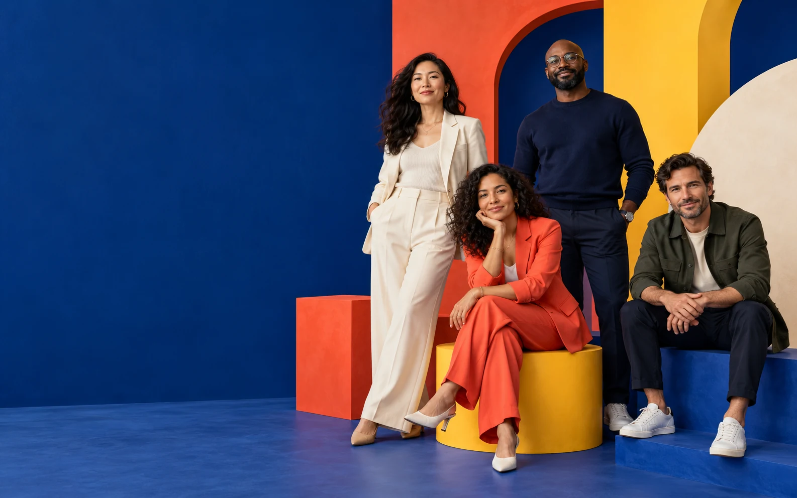

Leadership, reimagined
Lead what
comes next.
Build the clarity, courage, and collective power to move people—and possibility—forward.
01 Our conviction
A human advantage
The future belongs to leaders who can hold tension, create clarity, and move together.
Leadership is not a title. It is a daily practice of seeing what others miss, asking better questions, and building the conditions where people do their best work.
Real shifts.
Measurable movement.
Built around your moment
Choose your
next move.
Focused programs for the moments that shape leaders, teams, and organizations.
8 week cohort
Step into your influence.
Turn self-awareness into meaningful action. Build the confidence and tools to lead before the title arrives.
- Live practice labs
- Peer learning circle
- Personal edge map
02 How we work
Practice over theory
Ideas you can use
on Monday.
Bring the live challenge into the room. Every tool is tested against the conversations, choices, and constraints already on your desk.
Leadership grows through observation and honest reflection. Practice with peers who challenge your defaults and expand your range.
Translate intention into small, observable behaviors. Measure what changes in the room, across the team, and through the work.
From the field
Change you
can feel.
“I stopped trying to have every answer. The team got stronger the moment I started creating better questions.”
“The program gave us a shared language for the conversations we had been avoiding. That changed everything.”
“We moved from a group of smart individuals to a team that could actually think—and decide—together.”
Your move
What kind of leader
are you becoming?
Five questions. One useful perspective. A sharper place to begin.